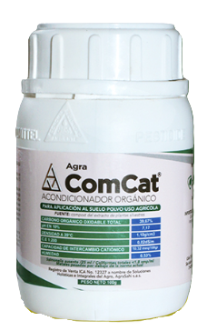
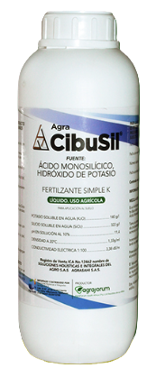
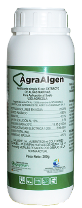
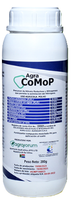
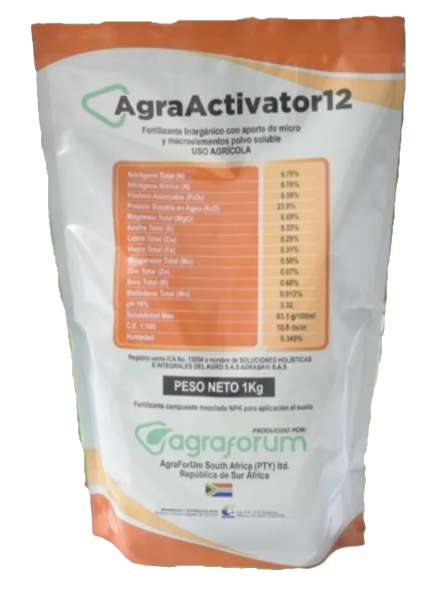

Ha Impactadas
Productos en Catálogo
Años de Experiencia
Incremento Promedio en Rendimiento
Tecnología e Innovación al servicio del Agro
Fusionamos ciencia agrícola de vanguardia con tecnología digital para llevar resultados medibles al campo colombiano.
Control Research SAS
¿Quiénes Somos?
Control Research BIOZAGRI SAS es una empresa colombiana especializada en la comercialización de insumos agrícolas de alta calidad para el sector agroindustrial. Con presencia estratégica en Sabaneta y Apartadó, Antioquia, brindamos soluciones innovadoras respaldadas por investigación científica y Registro ICA.
Representamos marcas de clase mundial como Agraforum, ofreciendo productos de precisión para maximizar la productividad de sus cultivos de manera sostenible, con acompañamiento técnico especializado en campo.
Misión
Proveer insumos agrícolas innovadores y certificados que potencien la productividad de los agricultores colombianos, promoviendo prácticas sostenibles y respetuosas con el medio ambiente.
Visión
Ser la empresa líder en comercialización de insumos agrícolas de alta tecnología en Colombia para 2030, reconocidos por nuestra innovación, calidad científica y compromiso con el desarrollo rural.
Nuestros Valores
Sostenibilidad
Comprometidos con el cuidado del medio ambiente y la producción responsable para generaciones futuras.
Innovación
Siempre a la vanguardia de la ciencia agrícola y las nuevas tecnologías biológicas.
Confianza
Relaciones duraderas basadas en la transparencia, el cumplimiento y la honestidad.
Calidad
Productos certificados y respaldados por el Instituto Colombiano Agropecuario ICA.
Portafolio de Productos
Soluciones integrales para cada necesidad de su cultivo

OrgánicoAgra-ComCat®
Bioextracto de plantas silvestres (Caryophyllaceae) con 39.67% carbono orgánico. Activa metabolismo vegetal, mejora calidad del fruto y refuerza resistencia al estrés. Certificado orgánico OKO y OMRI.

Agra CibuSil®
Concentrado soluble de Potasio (K₂O) y Silicio (SiO₂). Fortalece la pared celular de la planta, mejora resistencia a enfermedades foliares y al estrés hídrico. Aplicación foliar 250–300 cc/ha.

NaturalAgraAlgen®
Extracto microgranular de Ascophyllum nodosum con K₂O 20.39% y ácido algínico 6.85%. Mejora formación de yemas, floración y retención de frutos. Excelente antioxidante en condiciones de estrés. Foliar 200 g/ha.

AgraCoMoP®
Fertilizante soluble con Cobalto (3.70%), Molibdeno (8.92%), P₂O₅ (12%) y K₂O (8.05%). El cobalto inhibe síntesis de etileno y apoya bacterias fijadoras de N₂. Esencial para leguminosas y nodulación. Foliar 150–200 g/ha.

DestacadoAgraActivator 12®
Fertilizante soluble NPK de alta asimilación: N 6.78% · P₂O₅ 6.58% · K₂O 23.9%, complementado con microelementos. Apto para aplicación foliar y sistemas de fertirriego. Potencia el llenado de frutos y la calidad exportable.
No se encontraron productos. Intente con otro término.
¿No encuentra lo que busca? Nuestro equipo técnico le asesorará personalmente.
Solicitar Asesoría TécnicaNuestros Servicios
Soluciones integrales para el campo colombiano
Asesoría Técnica Agrícola
Profesionales especializados en campo para diagnóstico, planificación nutricional y manejo integrado de cultivos en toda Colombia.
Investigación y Desarrollo
Investigación aplicada en condiciones reales de campo colombiano para validar y optimizar protocolos de nutrición y fitosanidad.
Acompañamiento en Cultivos
Seguimiento técnico continuo durante todo el ciclo del cultivo: desde siembra hasta cosecha, con registros documentados de evolución.
Diagnóstico Agrícola
Análisis foliar, de suelo y de agua con interpretación agronómica personalizada para identificar deficiencias y enfermedades con precisión.
Planes Nutricionales
Diseño de programas de nutrición a la medida basados en análisis de suelo, requerimientos del cultivo y objetivos de producción del agricultor.
Software de Seguimiento de Campo
Plataforma digital operativa para registro y monitoreo de variables agronómicas en campo. Generación de informes técnicos automatizados y toma de decisiones basada en datos en tiempo real.
Tecnología al
Servicio del Campo
Nuestros productos están desarrollados con biotecnología de vanguardia, aprovechando microorganismos benéficos seleccionados para maximizar la productividad agrícola de forma sostenible y certificada.
Biotecnología Avanzada
Cepas microbianas de alta eficacia, seleccionadas en laboratorio de investigación
Producción Sostenible
Reducción de agroquímicos convencionales sin sacrificar rendimiento productivo
Resultados Medibles
Incrementos documentados del 30–60% en eficiencia nutricional y sanitaria
Certificados ICA Colombia
Todos los productos con registro vigente del Instituto Colombiano Agropecuario
Nuestras Sedes
¿Listo para Transformar su Cultivo?
Escríbanos y un asesor técnico le contactará a la brevedad